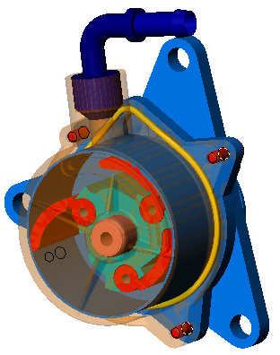
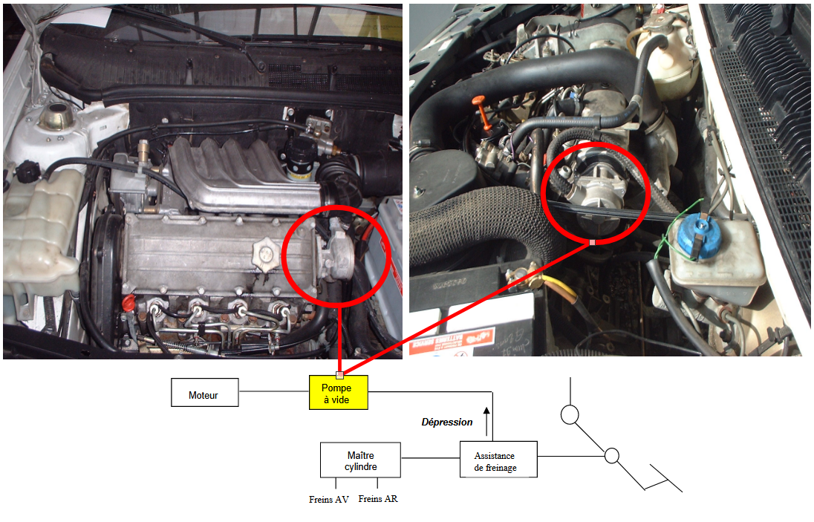
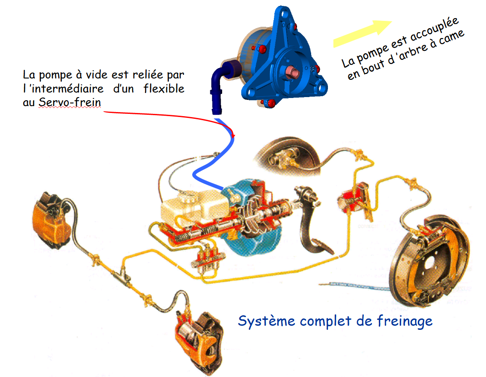
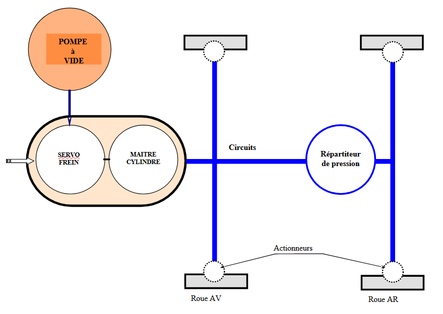
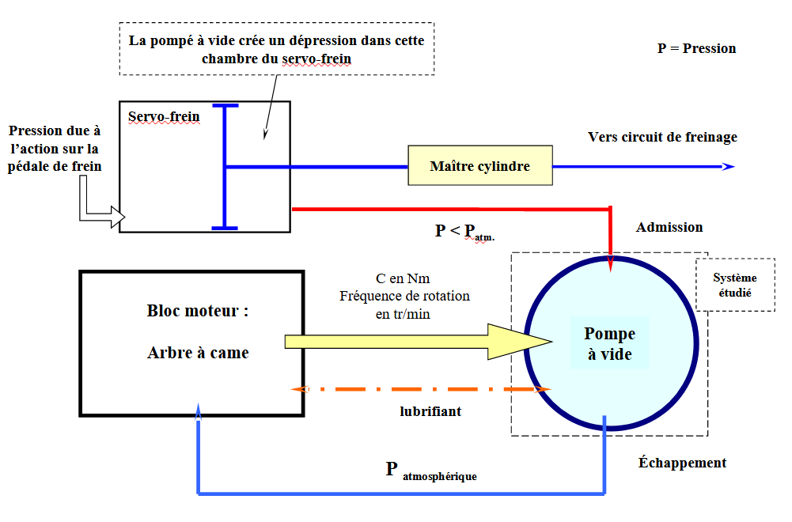
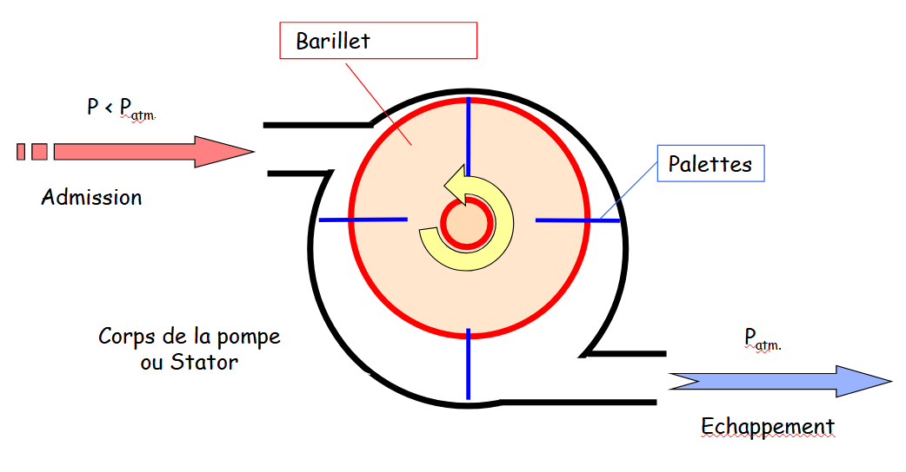
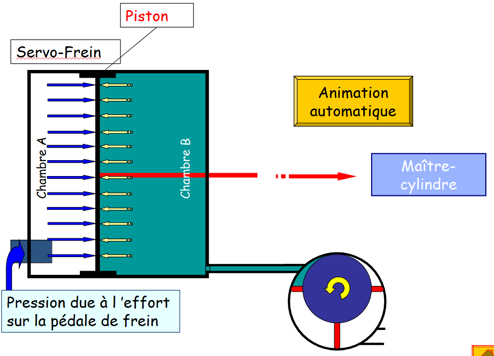
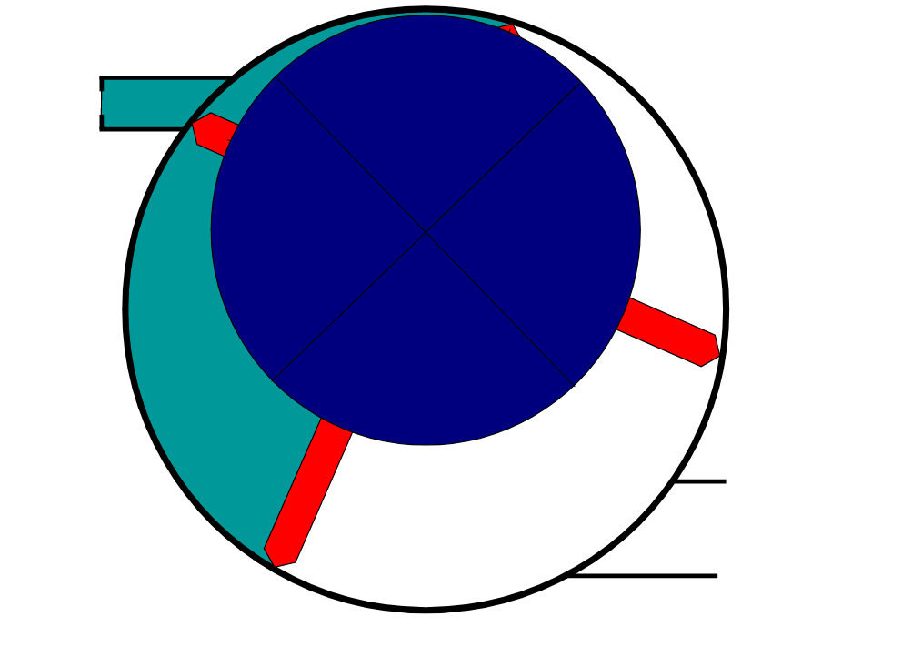

Mise en situation


Schéma simplifié du système de freinage

Fonctionnement

Les palettes sont réparties autour de la pompe sur le barillet. Le mouvement de l’arbre excentré déplace donc chaque palette l’une après l’autre. Constamment en contact avec l’intérieur du carter, ce qui permet d’obtenir une dépression en continu.

Lors du freinage, le rôle de la pompe à vide est de créer une dépression dans la chambre B du servo-frein de façon à ce que l ’effort du conducteur sur la pédale de frein soit moindre pour déplacer le piston.

